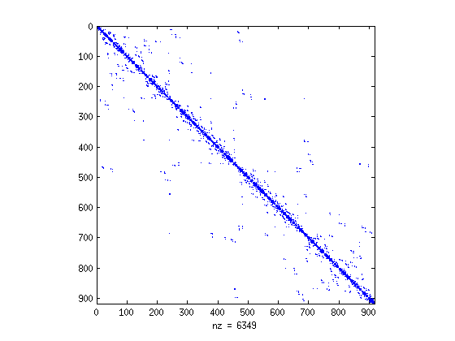

Building quad-trees and using them as a reordering technique
ex_quadtree shows how to
- build a quadtree structure based on nodes and markers
- renumber nodes and markers based on the quadtree
Contents
Generate unstructured triangular mesh
The example setup is a square domain with a finely-resolved circular inclusion in the center.
% Setup domain - square box x_min = 0; x_max = 1; y_min = 0; y_max = 1; points = [ x_min y_min; x_max y_min; x_max y_max; x_min y_max]'; segments = [1 2; 2 3; 3 4; 4 1]'; % Add a circular inclusion in the center no_pts_incl = 150; radius = 0.1; alpha = 0.5; theta = linspace(0,2*pi,no_pts_incl); theta(end) = []; xx = cos(theta); yy = sin(theta); center_x = alpha*x_max+(1-alpha)*x_min; center_y = 0.5*(y_max+y_min); INCLUSION = [center_x + radius*xx; center_y + radius*yy]; no_pts = size(INCLUSION,2); pts_u = 4 + no_pts; pts_l = 5; INCLUSION_s = [pts_l:pts_u;pts_l+1:pts_u+1]; INCLUSION_s(2,end) = pts_l; points = [points INCLUSION]; segments = [segments INCLUSION_s]; % Set triangle input tristr.points = points; tristr.segments = uint32(segments); % Set triangle options opts = []; opts.element_type = 'tri3'; opts.gen_neighbors = 1; opts.triangulate_poly = 1; opts.min_angle = 30; opts.max_tri_area = 0.01;
Generate and show the mesh:
% Generate the mesh using triangle MESH = mtriangle(opts, tristr); % Show the mesh ncorners = 3; nel = length(MESH.ELEMS); X = reshape(MESH.NODES(1,MESH.ELEMS(1:ncorners,:)), ncorners, nel); Y = reshape(MESH.NODES(2,MESH.ELEMS(1:ncorners,:)), ncorners, nel); C = zeros(size(X)); figure(1); clf; h = patch(X, Y, C); axis square

Create and show mesh connectivity graph (sparse matrix)
Create the connectivity matrix for the created mesh. The non-zeros in the sparse matrix indicate the connectivities between the mesh nodes: matrix entry at (i, j) denotes a connection between nodes i and j.
Aconn = sparse_create(MESH.ELEMS); spy(Aconn);

Build quad-tree based on the mesh nodes and renumber the nodes
Create a quadtree based on the nodes. The quadtree is finely adapted (maximum of 1 node in a quadrant is allowed). The quadtree is used to reorder the nodes to achieve 2D spatial locality.
qtree_nodes = quadtree('create', MESH.NODES, x_min, x_max, y_min, y_max, 1); % save qtree in a VTK file. View it with e.g., Paraview quadtree('vtkwrite', qtree_nodes, 'example'); % get quadtree node ordering perm = quadtree('reorder', qtree_nodes); % renumber the nodes iperm(perm) = 1:numel(perm); MESH.ELEMS = uint32(iperm(MESH.ELEMS)); MESH.NODES = MESH.NODES(:,perm); % create and show sparse matrix for renumbered nodes Aconn = sparse_create(MESH.ELEMS); spy(Aconn);
Renumber random cloud of points using quadtree ordering
Create a quadtree based on the markers. The quadtree is only roughly adapted (maximum of 4096 markers in a quadrant are allowed). The quadtree is used to reorder the markers to achieve 2D spatial locality.
% randomize markers n_markers = 1e6; markers = 0.01+0.98*rand(2, n_markers); % create the quadtree qtree_markers = quadtree('create', markers, x_min, x_max, y_min, y_max, 4096); % find marker ordering based on quadtree traversal I = quadtree('reorder', qtree_markers); markers = markers(:,I);